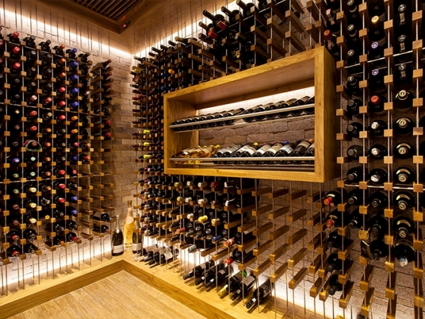

Nossa Seleção e Variedades
O mundo dos vinhos é vasto e diverso. Atualmente, existem cerca de 6.000 variedades de uvas viníferas no mundo, cada uma com características únicas moldadas pela região, clima e solo. No Vinheiro Agnello, selecionamos rótulos que representam essa riqueza global.
| Categoria | Tipo de Uva | Perfil de Sabor |
|---|---|---|
| Tinto Encorpado | Cabernet Sauvignon | Frutas negras e taninos firmes |
| Branco Refrescante | Chardonnay | Notas cítricas e baunilha |
| Tinto Macio | Merlot | Frutas vermelhas e textura aveludada |
| Rosé | Pinot Noir | Leve, fresco e frutado |
Armazenagem Controlada
Uma das particularidades mais relevantes dos vinhos é o risco de sua degradação. Luz natural, temperaturas altas e vibrações constantes podem alterar coloração, aroma e sabor.

Conhecedora desses riscos, o Vinheiro Agnello adota cuidados especiais na armazenagem, buscando garantir aos clientes mais exigentes a qualidade original de cada garrafa, como recebida de seus fornecedores.
Por que escolher nossa adega?
- Controle rigoroso de umidade e temperatura.
- Proteção total contra incidência direta de raios UV.
- Curadoria feita por especialistas com mais de 15 anos de mercado.
- Seleção de rótulos raros e de alta valorização.